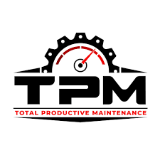
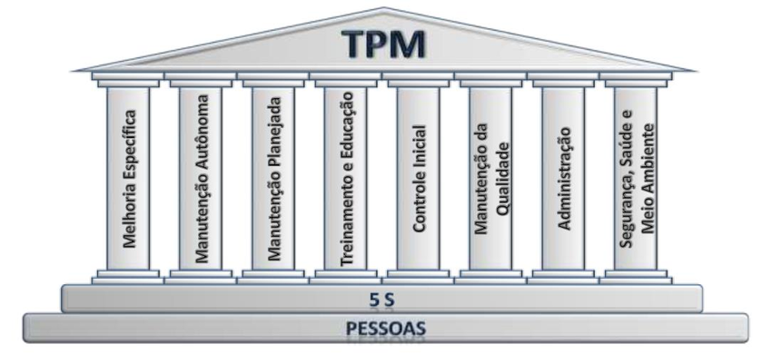
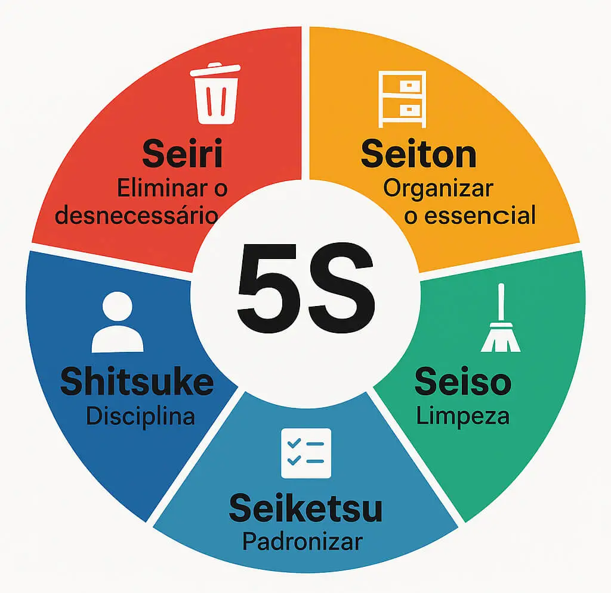

Manutenção Produtiva Total

A Manutenção Produtiva Total (TPM) é uma abordagem integral de manutenção que visa otimizar o desempenho dos equipamentos através da participação ativa de todos os colaboradores. O objetivo é alcançar a excelência operacional, minimizando paradas e maximizando a produtividade.

O TPM é composto por oito pilares fundamentais, cada um focado em aspectos específicos da manutenção e da gestão de equipamentos. Esses pilares incluem:
O pilar da manutenção é um dos mais importantes do TPM, pois é responsável por garantir a confiabilidade e a eficiência dos equipamentos. Ele envolve a implementação de práticas de manutenção preventiva, preditiva e corretiva, além de capacitar os operadores para realizar tarefas de manutenção básica.
A manutenção preventiva é realizada em intervalos regulares para prevenir falhas e garantir o bom funcionamento dos equipamentos. Ela inclui atividades como lubrificação, limpeza, ajustes e substituição de peças desgastadas.
A manutenção preditiva utiliza técnicas de monitoramento e análise de dados para prever falhas antes que elas ocorram. Isso permite que as equipes de manutenção intervenham de forma proativa, minimizando o tempo de inatividade e os custos de reparo.
A manutenção corretiva é realizada após a ocorrência de uma falha ou problema, com o objetivo de restaurar o funcionamento normal dos equipamentos. Ela envolve diagnóstico, reparo e substituição de peças danificadas.
A manutenção autônoma envolve a capacitação dos operadores para realizar tarefas de manutenção básica, como inspeções regulares, limpeza e lubrificação. Isso permite que os operadores identifiquem problemas antes que eles se agravem e possam realizar intervenções simples, reduzindo a dependência de equipes especializadas.
O pilar da manutenção traz diversos benefícios para a organização, como aumento da produtividade, redução de custos com reparos e paradas, melhoria da segurança e qualidade do produto.
A análise de falhas é uma prática importante para entender as causas raiz das falhas nos equipamentos. Isso permite implementar soluções eficazes e prevenir a ocorrência de problemas semelhantes no futuro.
Os 5 sensos (5S) são uma metodologia japonesa de organização e gestão do ambiente de trabalho, que complementa os princípios do TPM. Eles são fundamentais para criar um ambiente de trabalho eficiente, seguro e produtivo, promovendo a disciplina e a melhoria contínua.
